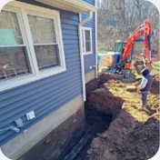
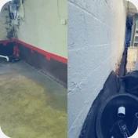
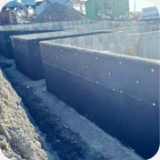
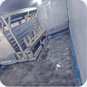
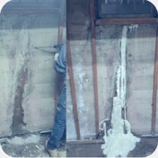
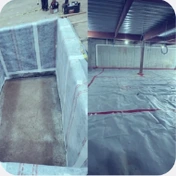
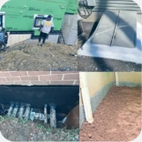

01 / Existing foundationsService Existing Foundation LeaksSee gallery Original album · opens in a new tabWaterproofing360 / Real project photographs
Real work.
Every angle.
A closer look at what happens
before the finish.
Explore the original photo galleries by service. These are job-site photographs from Waterproofing360—not the architectural illustrations used elsewhere on this site.
07
Service-specific galleries.
Each opens its own original album.
Choose the work you want to see.
Original galleries open in a new tab ↗
02 / DrainageFrench Drain and Trench Drain SystemsSee gallery Original album · opens in a new tab
03 / Below gradeBelow Grade Concrete FoundationSee gallery Original album · opens in a new tab
04 / Specialty wet areasShower, Spa, Mikvah, & Pool WaterproofingSee gallery Original album · opens in a new tab
05 / Targeted repairsCrack InjectionsSee gallery Original album · opens in a new tab
06 / Hidden layersUnderslab and Waterproofing WrapsSee gallery Original album · opens in a new tab
07 / More project photographsServices and OtherSee gallery Original album · opens in a new tabSmall previews. The complete story in each album. Select a gallery to view the original collection, or ask the team about a similar project.